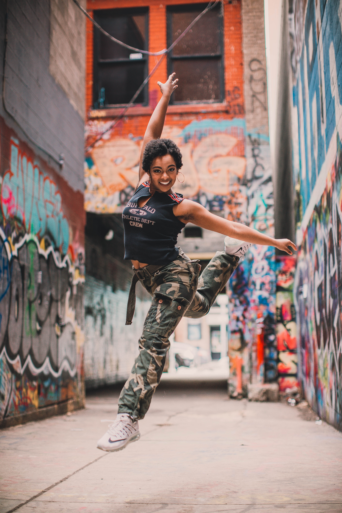
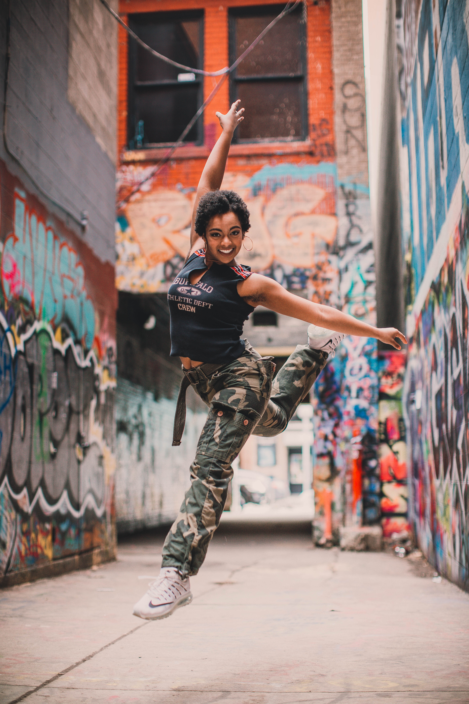

Portraits
My favorite medium to work with is people. I love nothing more than expressing a person’s individuality through a visual medium, and I believe that in the correct environment, a client’s true personality can absolutely shine. In my photoshoots, I use a combination of a casual demeanor alongside using only natural light in order to put my subjects as much at ease as is possible (that is, for being in front of a camera).
I believe that the best time to shoot photos is during “golden hour”, and therefore I try to exclusively start my photoshoots two hours before sunset, on sunny days. I tell my subjects to wear whatever they feel most comfortable in, but encourage them to avoid clashing colors and busy patterns. Finally, subjects are welcome to choose locations that are near and dear to their heart, in order to further bring out their true self.
 
